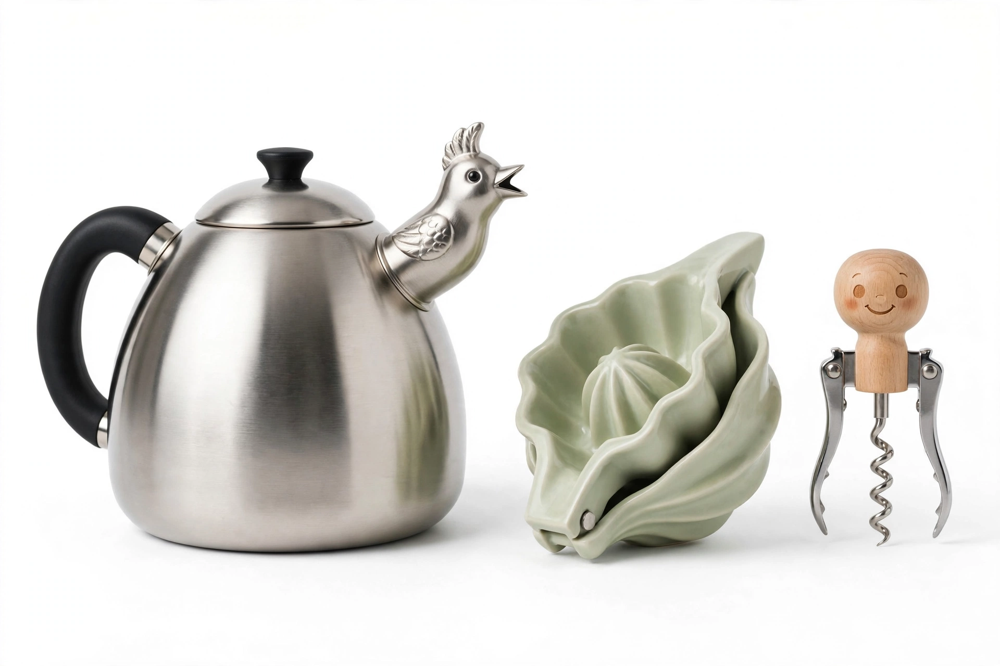

Alessi
Alessi is an Italian housewares and kitchen utensil company, founded by Giovanni Alessi in 1921 in Omegna, Piedmont. The company became internationally famous as one of the leading "Italian design factories", producing everyday domestic objects — kettles, corkscrews, citrus squeezers, espresso makers — designed by prominent architects and designers including Michael Graves, Philippe Starck, Ettore Sottsass, Aldo Rossi, Richard Sapper and Alessandro Mendini. Many Alessi products are held in the permanent collections of museums such as the Museum of Modern Art in New York.

| Alessi S.p.A. | |
|---|---|
| Industry | Housewares, industrial design |
| Founded | 1921, Omegna, Italy |
| Founder | Giovanni Alessi |
| Headquarters | Omegna, Piedmont, Italy |
| Products | Kitchenware, tableware, small appliances |
History
The firm began as a workshop producing turned and pressed metal objects for the table. Under Carlo Alessi (from the 1930s), and then Alberto Alessi (from 1970), it shifted decisively toward collaboration with outside designers. Signature products include Richard Sapper's 9090 espresso maker (1979), Michael Graves's 9093 kettle with a bird-shaped whistle (1985) — the company's bestseller — Philippe Starck's Juicy Salif lemon squeezer (1990), a sculptural object famous for being as much discussed as used, and Alessandro Mendini's Anna G. corkscrew (1994).
The company's design-led strategy helped define postwar Italian industrial design, in which functional domestic items became affordable works of art. The Alessi Museum, opened in 1998 near Omegna, preserves the company's archive of prototypes and products.
See also
Categories: Italian brands · Manufacturing companies of Italy · Design companies